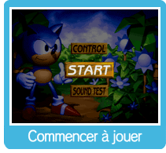

Dr. Robotnik (alias Dr. Eggman) a découvert d’étranges oiseaux appelés Flickies, qui peuvent aller n’importe où à l’aide des Dimension Rings. Après les avoir capturés, Robotnik décide de les transformer en robots afin de trouver les Chaos Emeralds plus rapidement. Il ne tient qu’à Sonic de libérer les Flickies de cette emprise robotique et d’empêcher Robotnik de trouver les Chaos Emeralds.
À partir de l’écran de titre, appuie sur  pour afficher le menu des options du jeu. Appuie sur pour afficher le menu des options du jeu. Appuie sur  vers le haut ou le bas pour sélectionner l’une des trois options, puis appuie sur pour confirmer ton choix. Dans Sound Test (Test sonore), appuie sur vers la gauche ou la droite pour changer de piste, et appuie sur vers le haut ou le bas pour sélectionner l’une des trois options, puis appuie sur pour confirmer ton choix. Dans Sound Test (Test sonore), appuie sur vers la gauche ou la droite pour changer de piste, et appuie sur  ou ou  ( ( ou ou  sur la manette classique) pour l’écouter. Pour arrêter la musique, appuie sur sur la manette classique) pour l’écouter. Pour arrêter la musique, appuie sur  ( ( sur la manette classique). sur la manette classique).
START (Commencer) : Commence une partie.
CONTROL (Commandes) : Change la configuration des boutons pour ce jeu. Appuie sur un bouton pour changer de configuration.
Remarque : A, B, et C représentent les boutons de la Genesis.
SOUND TEST (Test sonore): Écoute la musique et les effets sonores de ce jeu.
La scène de prologue démarrera quand tu commences la partie. Appuie sur ou ( ou sur la manette classique) pour voir la scène suivante. Pour passer la scène, appuie sur pour commencer dans la Zone 1.
|